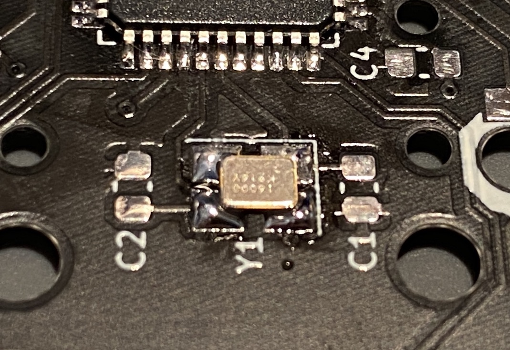
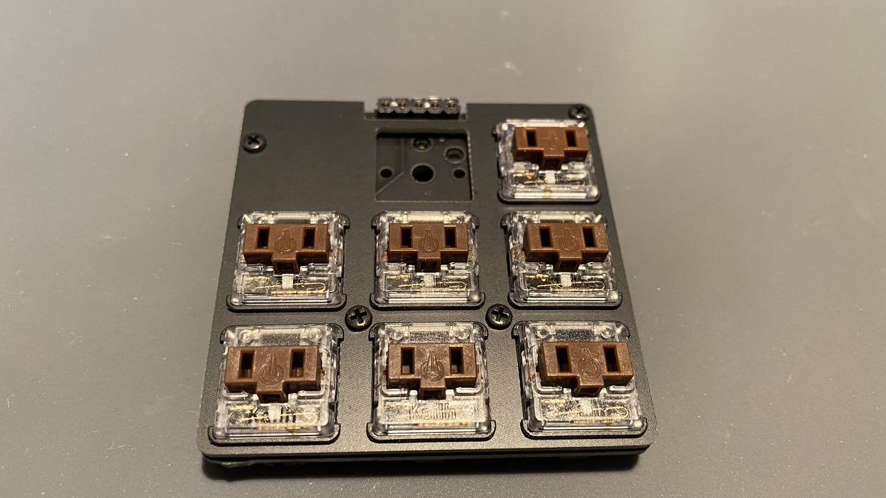

ビルドガイド
同梱品の確認
- トッププレート
- ボトムプレート
- 基板
- 電子パーツセット（下記表）
- キースイッチソケットx8
- ダイオードx8
- ゴム足 x 4
- トラックボールモジュールケース
- M2ネジ 8mm x 4
- M2ナット 2mm x 4
- M2ナット M2 1.2mm x 8
- M3ネジ x 1
- M3ナット x 1
- ピンヘッダ x 1
- ピンソケット x 1
| 番号 | 種類 | 詳細 | 数(予備) | 備考 |
|---|---|---|---|---|
| C1, C2 | コンデンサ | 22pF | 2(+1) | |
| C3 | コンデンサ | 1uF | 1(+1) | |
| C4, C5, C6 | コンデンサ | 0.1uF | 3(+1) | |
| C7 | コンデンサ | 10uF | 1(+1) | |
| R2, R3 | 抵抗 | 22Ω | 2(+1) | |
| R1, R4 | 抵抗 | 10kΩ | 2(+1) | |
| F1 | フューズ | 1 | ||
| Y1 | 水晶振動子 | 1 | ||
| U1 | MCU | ATmega32U4-AU | 1 | |
| USB1 | USBコネクタ | 1 | ||
| リセットスイッチ | 1 |  |
その他に必要な部品
- Choc用キースイッチ x 7 or 8
- Choc用キーキャップ x 7 or 8（縦17mm 横18mm以下のサイズ）
- オプション
- USBケーブル
ハンダ付け
MCUを取り付ける
-
基板の○とmcuの○を合わせて配置する
-
フラックスを塗る
-
ハンダ付けをする
MCUのハンダ付けはminiaxeのビルドガイドminiaxeのビルドガイドで紹介されていた、こちらの動画が参考になると思います。
私は動画後半で紹介されているD型のハンダゴテで行いました。
一辺ずつハンダをしていきますが、一辺やった時点で足の位置がずれているとリカバリするのが結構大変なので、最初に画像の赤丸のように対角線上の2点をハンダ付けして足の位置を固定しまうのが良いと思います。
初回はこれのおかげでだいぶ苦労しました。。
クリスタルを取り付ける
-
横長の部品になります。図のように横長に付けてください。上下はどちらでも大丈夫です
-
4つのうちの一つに予備ハンダをして部品を固定します
-
残りの3つもハンダを流し込み固定します

USBコネクタを取り付ける
- 5本足の部分はMCUと同じように付けていきます
- 隣のピンとショートしていないかテスターで確認してください
コンデンサ、抵抗、フューズを取り付ける
- 部品表の通りに取り付けてください。よくやるSMDダイオードのように予備ハンダを付けて、という手順でやっていきます。
- 特にコンデンサは見た目で違いがわからないので、一つ一つ番号順に付けていくことをおすすめします
リセットスイッチを取り付ける
ファームウェア
- ダイオードなど量が多いものが終わった後にファームに書き込めないと凹むので、この時点でファームへの書き込みテストをおすすめします
- まずは、キーボードをPCに接続して認識されるか確認してください
- qmk本体には登録していないので、こちらのソースを持っていってください
- https://github.com/yfuku/qmk_firmware/tree/yfuku/keyboards/tb7
make tb7:default:dfuして書き込みます- 初めてファームを書き込む場合はリセットスイッチを押す必要はありません
ダイオード、キースイッチソケットを取り付ける
- 通常の取り付けと変わらないので、bat43のビルドガイドを参考にしてください
- 上段真ん中はトラックボールではなく、キースイッチもつけれるようになっているのでソケットがつきます。
（ここだけ向きが逆なので注意）
ピンソケットを取り付ける
トラックボールモジュール
-
下記を利用して、トラックボールモジュールを設置することができます
-
レベル変換基板とピンヘッダを取り付ける
-
付属の物はちょっとだけピンが長いので先端をニッパーでカットしてください
-
M3ナットをトラックボールモジュールケースの中に仕込む（テープなどで蓋をして絶縁しておくと安心です）
-
こんな感じに畳み込んで、ケースの中にいれる

組み立て
-
トッププレートにネジとナット(M2 1.2mm)を取り付ける
-
トッププレートと基板を合わせる
-
キースイッチ を取り付ける
 -
ピンソケットに差込みつつ、トラックボールモジュールのケースも押し込んで固定する
-
トラックボールモジュールの裏からm3のネジを取り付ける
-
M2 2mmのナットを取り付ける
-
ボトムプレートを合わせネジ止めをし、ゴム足を取り付ける
-
キーキャップを付けて完成！
-
トラックボールなしの8キーバージョン
謝辞
MCU直づけのキーボードを作るのに、ai03さんのドキュメントを参考にさせていただきました。
MCU周りの配置や部品選定は大体そのままになっています。
PCB Designer Guide | Keyboard Designer Wiki @ ai03.me
また、すでにMCU直付けのキーボードを作られている方の情報も参考にさせていただきました。ありがとうございます。
- Keyboards/treadstone32_buildguide.md at master · marksard/Keyboards · GitHub
- NumATTACK16 SMD版ビルドガイド | 25KEYS
- GitHub - ka2hiro/miniaxe_build_guide: MiniAxe Build Guide